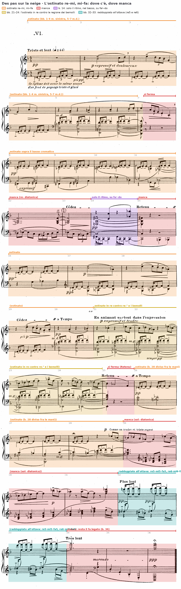
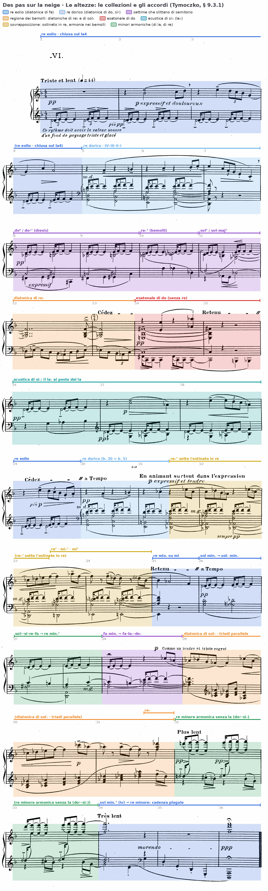
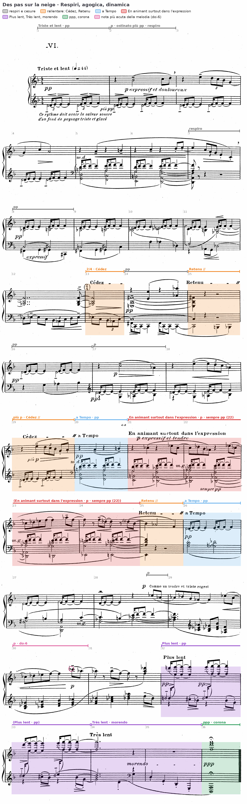
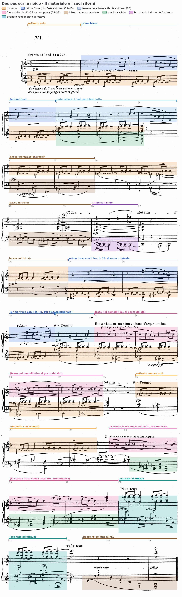
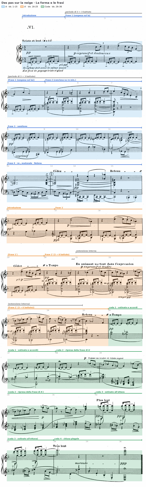

L’analisi integrale scritta del preludio letto sulla scheda all’inizio dell’anno: i quattro piani, il testo, e le settime che non risolvono.
Ce rythme doit avoir la valeur sonore d’un fond de paysage triste et glacé
C. Debussy, indicazione alla prima battuta di «Des pas sur la neige», 1910
B4Oltre la tonalità: i modi diatonici e la modulazione modale, pp. 240 e 244; il sistema esatonale, pp. 248–249; la scala acustica, p. 256.
D. D’Urso, C. Bertolini, Il linguaggio della musica, 5° anno (Mondadori Education 2022).
La prova di tipo A chiede l’analisi di una composizione, o di una sua parte significativa, tratta preferibilmente dal Novecento, con la sua contestualizzazione storico-culturale. Il testo si scrive in prosa continua nell’ordine dei quattro piani: i parametri, il materiale e le sue trasformazioni, la forma con la tabella, lo stile e il contesto. All’inizio dell’anno il preludio è stato letto sulla scheda; ora la scheda diventa testo, e un punto in più va spiegato con i termini dell’unità: gli accordi con la struttura della dominante che non risolvono.
1. Ogni affermazione porta la sua battuta; le altezze si danno con l’indice d’ottava (do4 = do centrale).
2. Gli accordi si nominano con le note, dal basso, e con la specie; il grado si aggiunge solo se esiste un centro, e si dice quale.
3. Prima il dato, poi l’interpretazione; dove la partitura ammette due letture, si espongono entrambe.
4. Le indicazioni dell’autore si citano in corsivo e in francese, come sono stampate.
5. Le fonti si citano con autore, titolo e pagina; il quarto piano usa soltanto fatti certi.
Raccontare il pezzo battuta per battuta, dall’inizio alla fine, e mettere insieme così i quattro piani. Il testo d’analisi raccoglie i dati per parametro (tutte le cadenze insieme, tutta la testura insieme) e li riferisce a una tesi, enunciata nell’introduzione e ripresa nella conclusione.
Sulla partitura numerata (36 battute: 3 + 4 + 4 + 4 + 3 a p. 22, 4 + 4 + 3 + 3 + 4 a p. 23) si segnano con un cerchio le battute in cui l’ostinato re–mi–fa manca, e con una parentesi le battute in cui il basso tiene un accordo di settima.

Claude Debussy, Des pas sur la neige, n. 6 dei Préludes per pianoforte, primo libro · edizione Durand, Parigi 1910, pp. 22–23 · 4/4 (b. 13 in 2/4), Triste et lent (semiminima = 44) · 36 battute, numerate per l’analisi perché l’edizione non le numera (conteggio ripetuto due volte, sistema per sistema: 3 + 4 + 4 + 4 + 3 battute a p. 22, 4 + 4 + 3 + 3 + 4 a p. 23). Le altezze sono indicate con l’indice d’ottava internazionale (do4 = do centrale).
Il preludio poggia su una figura di tre suoni, re–mi–fa, che ritorna in quasi ogni battuta con lo stesso ritmo e alla stessa altezza e che la didascalia della b. 1 definisce come lo sfondo sonoro di un paesaggio, «un fond de paysage triste et glacé». Le frasi e le armonie che si succedono intorno a questo sfondo non stabiliscono mai un rapporto di dominante e tonica, e la coerenza del brano nasce dal rapporto fra l'ostinato e le collezioni di suoni che lo circondano. Le scale della regione di re contengono tutte il tricordo re–mi–fa e colorano diversamente un unico centro; quelle della regione contrastante, raggiunte per slittamento di semitono e per suoni comuni, lo escludono, e in quei punti l'ostinato tace. L'unica eccezione, le bb. 21–24, sovrappone le due regioni invece di alternarle. Il percorso si chiude con una cadenza plagale e con un accordo di re minore in cui la quinta la, assente dalle otto battute precedenti, ricompare soltanto nel registro più grave.
Piano 1 · I parametri (7 minuti). La collezione delle bb. 2–4 e quella delle bb. 5–7, con il suono che le distingue. L’accordo del basso alle bb. 8, 10, 14 e 21, con le note dal basso e la specie; per ciascuno, se risolve e dove. Le battute in cui una frase si chiude, e come si chiude in assenza di cadenze perfette. Il registro più acuto e più grave del pezzo, con la battuta.
Piano 2 · Il materiale (3 minuti). La prima frase (bb. 2–4) e il suo ritorno (bb. 17–19): che cosa resta, che cosa cambia. La frase delle bb. 21–24 e il suo ritorno nella coda.
Piano 3 · La forma (3 minuti). Le sezioni, con le battute di inizio e di fine e il segno che le separa (ritorno, cesura, indicazione di tempo).
Piano 4 · Lo stile e la storia (2 minuti). Dove sta il titolo nella partitura; quali procedimenti, già visti in «Voiles» e nella Gymnopédie, tornano qui.
La scheda si corregge piano per piano nelle slide seguenti, con i passi trascritti, le tavole e la prosa dell’analisi modello; corretta, è la traccia del testo da scrivere a casa.
La b. 1 espone l'ostinato da solo, pp: re4–mi4 nella prima metà della battuta, mi4–fa4 nella seconda; il fa, terza minore sopra il re, qualifica già il centro come minore. La melodia delle bb. 2–4 (si♭4–do5–re5, mi5–re5–do5–si♭4–sol4, sol4–do5–la4) impiega sei suoni, sol la si♭ do re mi, che insieme al fa dell'ostinato formano la scala diatonica di fa letta a partire da re, cioè il modo eolio, che D'Urso e Bertolini descrivono come una scala minore naturale «priva della sensibile» (Il linguaggio della musica, 5° anno, p. 240). Manca un basso, e l'armonia nasce soltanto dal contrappunto a due parti fra melodia e ostinato. La frase si ferma sulla minima la4 della b. 4, quinto grado del modo, sopra l'ostinato che continua a ripetere la tonica: una sospensione melodica che occupa il posto di una semicadenza senza che risuoni alcun accordo di dominante.
Alla b. 5 la melodia introduce il si♮4, e con esso la diatonica di do, cioè re dorico, che lo stesso manuale descrive come minore naturale con il sesto grado innalzato (p. 240). Tymoczko osserva che la condotta di semitono si♭→si collega in questo punto il minore naturale e il dorico sopra una tonica fissa (A Geometry of Music, p. 340, nota 29); in termini scolastici si tratta di una modulazione modale per cambio di modo con la stessa tonica (D'Urso, Bertolini, p. 244). Nello stesso momento entra la mano sinistra con quattro triadi allo stato fondamentale che scendono per grado congiunto in moto parallelo, con quinte e ottave parallele: sol2–re3–si♮3 e fa2–do3–la3 alla b. 5, mi2–si♮2–sol3 e re2–la2–fa3–la3 alla b. 6. Nel modo dorico la successione si legge IV–III–ii–i, e il quarto grado è maggiore proprio grazie al si♮. Il si♮4 della melodia, sul quarto tempo, forma con il fa del basso una quarta eccedente di colore lidio. La triade di re minore della seconda metà della b. 6, legata al primo tempo della b. 7, è l'unico accordo di tonica completo, con il re al basso, dell'intera sezione iniziale; vi si arriva dal secondo grado per moto parallelo, dunque con una cadenza modale priva di sensibile. La melodia, invece, scende fino al do4, settimo grado minore: l'armonia conclude, la linea resta sospesa. L'ostinato si interrompe sul primo tempo della b. 7, dopo il fa4 legato dalla battuta precedente.

La tavola riporta su tutta la partitura le collezioni e gli accordi che le quattro slide delle altezze descrivono passo per passo (D. Tymoczko, A Geometry of Music, § 9.3.1 e figg. 9.3.1–9.3.4).
Dalla b. 8 la voce espressiva passa al basso (expressif), che sale per semitoni fa♯2–sol2–sol♯2 e cade sul do♯2 (alla b. 9 sul do♯3), mentre una voce interna tiene il do3 e poi il do♯3 e la mano destra pone sotto l'ostinato il si♭3 nella prima metà della battuta e il si♮3 nella seconda. Sul primo tempo risuonano fa♯2, do3, si♭3, re4, mi4: cinque dei sei suoni della scala esatonale di do. Il fa♯ può essere inteso come appoggiatura cromatica inferiore del sol del secondo tempo, sopra il quale l'aggregato diventa un accordo di nona di dominante su do (do–mi–sol–si♭–re) con la quinta al basso; nella seconda metà sol♯2, do♯3, si3 e fa4, cioè mi♯, formano una settima di prima specie su do♯, a cui il mi dell'ostinato sovrappone la terza minore. Tymoczko descrive il passo come un'alternanza di do⁷, che appartiene alla diatonica di fa, e do♯⁷, che appartiene alla regione dei tasti neri (p. 322). Anche la grafia è un dato: alle bb. 8–9 l'accordo è scritto con i diesis, e la sua fondamentale è la sensibile di re; alla b. 10, raggiunta attraverso la linea interna si♭3–la3–la♭3, la stessa sonorità ritorna come re♭3, la♭3, do♭4 e re♭4 sotto il fa4 dell'ostinato, cioè come settima di prima specie su re♭, la tonica della regione che segue. Alla b. 11 il procedimento si ripete un semitono più in basso: sul secondo tempo il la♭2, appoggiatura cromatica, scende al sol2 e con si♮3, fa3 e re4 forma una settima di prima specie su sol (il mi dell'ostinato vi aggiunge la sesta); nella seconda metà re♭3, sol♭3, si♭3 e fa4 compongono una settima di quarta specie su sol♭ in secondo rivolto. Anche sol⁷ e sol♭maj⁷ appartengono a due regioni distinte (Tymoczko, p. 322).
Le bb. 12–13 confermano il nuovo ambito. La mano destra tiene sol♭3–si♭3–fa4, lo ripercuote con accento alla fine della b. 12 e lo prolunga nella b. 13, mentre il basso disegna una figura in crome, re♭3–mi♭3–mi♭3–do3, terzina si♭2–la♭2–do3, re♭3–mi♭3, ripetuta in forma abbreviata nella b. 13, l'unica in 2/4. I sette suoni sono quelli della diatonica di re♭. L'ostinato tace, perché né il re né il mi appartengono a questa collezione; ne sopravvive soltanto il fa4, legato dalla b. 11 come nota comune.
Alla b. 14 la mano destra tiene per un'intera battuta mi3–si♭3–fa♯4 sopra il do3 del basso, legato dalla battuta precedente, e la melodia si riduce a due ottave staccate, mi4–mi5 e la♭4–la♭5. Al grave, il basso ripete due volte fa♯2–do2 con il ritmo dell'ostinato. I suoni sono do, mi, fa♯, la♭ e si♭, cioè la scala esatonale di do priva del re. Il passaggio dalla regione precedente avviene per suoni comuni: il do resta al basso, il si♭ resta nella voce interna, il sol♭ si riscrive fa♯. Tymoczko individua in questo insieme comune, sol♭–la♭–si♭–do, il ponte fra le due collezioni e considera la sezione esatonale il punto di massima distanza dalla diatonica iniziale (p. 322). La scala per toni interi non contiene quinte giuste né triadi maggiori o minori (D'Urso, Bertolini, pp. 248–249): l'accordo do–mi–fa♯–si♭, settima di dominante con la quinta diminuita, è la stessa sonorità che aveva aperto la b. 8, ora stabilizzata e tenuta. Il fa manca, e con esso la seconda metà dell'ostinato; della figura resta il ritmo, che al posto della seconda maggiore suona un tritono. Alla b. 15 l'accordo è ripercosso una sola volta, poi il basso scende do2–si♮1–si♭1; il si♮ è l'unico suono estraneo alla scala, nota di passaggio, e il si♭1 su cui il basso si ferma è la fondamentale della collezione successiva.
La b. 16 riporta l'ostinato, sotto il quale il basso sale sol3–la♭3–si♭3; la stessa linea si ripete alle bb. 17–18 come voce inferiore della mano sinistra, e la melodia aggiunge do5 e la♭4. Re, mi, fa, sol, la♭, si♭ e do formano la scala acustica di si♭, che il libro di testo definisce come unione del modo lidio e del misolidio e come quarto modo della scala minore melodica (p. 256). Letta da re, la scala ha la quinta diminuita: il la♭ sostituisce il la. Tymoczko mostra come questa collezione faccia da intermediario fra le altre due, perché condivide cinque suoni con l'esatonale e sei con la diatonica (pp. 322–323 e fig. 9.3.3b). Il ritorno avviene infatti in due passaggi di un solo semitono ciascuno: il fa♯ si scinde in fa e sol alla b. 16, il la♭ torna la alla b. 19, dove la melodia riprende la discesa mi5–re5–do5–si♭4–sol4 e si ferma sul la4, di nuovo in re eolio.
Alla b. 20 ritornano identici gli accordi e le note isolate della b. 5, in re dorico. La b. 21 comincia come la b. 6, con la triade mi2–si♮2–sol3, ma la melodia porta un do♭5 al posto del do5. All'ascolto il do♭ coincide con il si della triade di mi minore ed è consonante; è scritto do♭ perché è la settima dell'accordo che segue, re♭2–la♭2–fa3–do♭4, una settima di prima specie su re♭. Si tratta di un secondo perno enarmonico, analogo al do♯/re♭ delle bb. 9–10. Per quattro battute i due strati restano distinti. L'ostinato continua a suonare re–mi–fa (alla b. 22 passa alla mano sinistra, m.g.); la melodia, che si muove in crome fino al la♭5 della b. 23, usa soltanto do♭, re♭, mi♭, fa, la♭ e si♭, sei suoni della diatonica di sol♭. Sotto entrambi l'armonia tiene la settima completa su re♭ (bb. 21–23) e poi procede per settime parallele prive della quinta, la cui fondamentale sale per semitoni: re con sol♭ scritto al posto del fa♯ (seconda metà della b. 23), mi♭–sol–re♭ e mi–la♭–re, con il la♭ in funzione di sol♯ (b. 24). Fra i procedimenti dei Préludes Salvetti annovera le «sovrapposizioni politonali» (La nascita del Novecento, p. 67), e qui la sovrapposizione è letterale: il re dell'ostinato risuona a un semitono dal re♭ del basso. Alla b. 25 l'ostinato si ferma. Sopra il mi2 del basso la mano sinistra suona la3–re4–fa4: il la♭3 della battuta precedente sale al la3 come una sensibile. L'aggregato ammette due letture. Può essere una triade di re minore in secondo rivolto collocata sopra il secondo grado, dunque il ritorno dell'armonia di re con una nona al basso; può essere anche un accordo per quarte, mi–la–re, con il fa aggiunto. La melodia, si♭4–la♭4–fa4, conserva intanto il la♭, cosicché la regione di re si ristabilisce nell'armonia ma non ancora nella linea superiore.
La coda riapre con l'ostinato e con due accordi che scendono di semitono, sol3–si♭3–re4 e sol♭3–la3–re♭4, cioè sol minore e sol♭ minore con il si doppio bemolle scritto la (b. 26). Alla b. 27 la mano sinistra tiene fa3 e sol♯3 e fa scendere il do4 al si♮3: con il re dell'ostinato ne risulta un accordo di settima diminuita, sol♯–si–re–fa, di cui il do è appoggiatura. Nella seconda metà della battuta il basso tocca re2–la2 e la mano sinistra completa re–fa–la–do, una settima di seconda specie sulla tonica. Sol♯ e si convergono sul la, re e fa sono comuni: la settima diminuita agisce come accordo di volta a note comuni sulla tonica. I suoni della battuta, la si do re mi fa sol♯, formano la scala minore armonica di la letta da re (Tymoczko, fig. 9.3.1, p. 324). Alla b. 28 la mano sinistra lega fa3 e la♭3 sotto il do4 e poi muove do4–si♮3–do♭4: il re minore diventa fa minore e poi una triade diminuita, fa–la♭–do♭. Il si♮ della b. 27 si riscrive do♭ nella stessa voce, terzo perno enarmonico del brano, e il re–mi–fa dell'ostinato si divide fra le due mani. Dal quarto tempo la melodia rientra nella regione dei bemolli, e dalla b. 29 alla b. 31, mentre l'ostinato tace, tutti i suoni appartengono alla diatonica di sol♭ (il «la♭ dorico» di Tymoczko). La mano sinistra armonizza la melodia con triadi in primo rivolto mosse in moto parallelo: alla b. 30 sol♭, la♭ minore, si♭ minore e do♭, cioè I⁶–ii⁶–iii⁶–IV⁶ di sol♭; la b. 31 si ferma su re♭ maggiore (fa5–la♭5–re♭6), quinto grado di sol♭.
Alla b. 32 (Plus lent) il re♭ cede al re♮ per semitono, e l'ostinato ritorna raddoppiato all'ottava, re5–mi5–fa5 e re6–mi6–fa6; sotto, la mano sinistra suona do♯5–si♭4 e si♭4–sol4. Re, mi, fa, sol, si♭ e do♯ sono sei suoni della minore armonica di re, con l'eccezione del la (fig. 9.3.1). La sensibile compare per la prima volta come nota melodica, ma scende al si♭ per seconda eccedente e non risolve sul re. Alla b. 34 (Très lent) la mano destra tiene fa5–fa6, ultimo suono dell'ostinato, e la sinistra sol4–si♭4–re5: sol–si♭–re–fa è una settima di seconda specie sul quarto grado. Il basso scende allora, staccato e morendo, per quarte e quinte alternate, re4–sol3 e re3–sol2–re2–sol1, fino al re1 della b. 36, dove l'accordo finale, ppp con corona, dispone re1–la1 al grave e fa5–re6–fa6 all'acuto, con quattro ottave vuote in mezzo. Dalla b. 28 alla b. 35 il la naturale non risuona mai: nelle bb. 28–31 è sostituito dal la♭, nelle bb. 32–35 manca del tutto. La quinta del re torna dunque soltanto nell'ultimo accordo, come quinta vuota al basso.
Nel preludio non c'è alcuna cadenza perfetta. Le frasi si chiudono per sospensione melodica sul quinto grado (la4, b. 4), per cadenza modale ii–i in moto parallelo (bb. 6–7), per arresto agogico (Cédez alle bb. 13 e 19, Retenu seguito dalla cesura «//» alle bb. 15 e 25) o con una semicadenza nella regione estranea, sul re♭ maggiore della b. 31. La conclusione è plagale: dal quarto grado con settima della b. 34 il basso oscilla fra sol e re fino alla tonica. La sensibile do♯ compare due volte, come fondamentale di un accordo di settima (bb. 8–9) e come nota che scende al si♭ (bb. 32–33), e in nessuno dei due casi risolve sul re. Il la non sostiene mai un accordo di dominante: nel registro grave compare soltanto come quinta sopra il re (bb. 6–7, 27, 36).
Quasi tutti gli incisi melodici cominciano dopo una pausa sul primo tempo (bb. 2, 3, 5, 6, 17, 18, 19, 21), e questo ritardo sottrae alla melodia l'accento metrico. La prima frase (bb. 2–4) procede per grado congiunto in legato, sale da si♭4 al mi5 tenuto della b. 3, scende in terzina e si chiude sul la4 entro un ambito di sesta. La seconda (bb. 5–7) è fatta di note isolate separate da pause, la4, si♮4, do5, re5–mi5 portato; il culmine, mi5, è seguito da una discesa per terze e per grado (do5–la4–sol4, mi4, do4) che porta la frase nel registro più grave raggiunto fino a quel momento. Le due frasi sono complementari per articolazione e per direzione. La frase delle bb. 21–24 è la più lunga e la più continua del brano: procede in crome, sale per grado do♭5–re♭5–mi♭5–fa5 e raggiunge il la♭5 tenuto della b. 23. Nella coda la stessa linea tocca il do♭6 (b. 30), la nota più acuta di tutte le frasi melodiche.
In ciascuna metà della battuta il suono grave dell'ostinato è percosso e tenuto come minima con il segno di tenuto, mentre il suono superiore entra dopo una frazione di tempo, all'interno di una terzina di crome, e si prolunga per legatura di valore fino al secondo movimento. Ogni metà di battuta comincia così con due attacchi ravvicinati sul tempo forte, seguiti da una seconda tenuta che cresce e decresce (le forcelle della b. 1), mentre il tempo debole non riceve alcun attacco. La didascalia chiede a questo ritmo «la valeur sonore d'un fond de paysage triste et glacé», cioè un valore timbrico più che una pulsazione. Le eccezioni metriche cadono nel punto più lontano del percorso: la b. 13 è in 2/4 (indicazione stampata fra parentesi) e accorcia la frase sotto il Cédez, la b. 14 conserva il ritmo dell'ostinato senza le sue altezze. Le indicazioni agogiche coincidono con le articolazioni formali: Retenu e cesura alle bb. 15 e 25, Cédez e cesura alla b. 19, a Tempo alle bb. 20 e 26, Plus lent e Très lent alle bb. 32 e 34. L'En animant della b. 21 riguarda, come precisa la didascalia, «surtout» l'espressione.
Gli strati sono tre, ciascuno con un registro proprio: l'ostinato al centro (re4–fa4), la melodia sopra (fino al do♭6), gli accordi e il basso sotto (fino al re1). L'ostinato passa da una mano all'altra secondo le esigenze dell'esecuzione (m.d. alle bb. 5 e 20, m.g. alla b. 22, diviso fra le mani alla b. 28). Nelle bb. 8–11 la gerarchia si capovolge, perché la voce più acuta è l'ostinato e la linea espressiva sta al basso; nelle bb. 12–13 e 29–31 gli strati si riducono a due; nelle bb. 32–33 l'ostinato è raddoppiato all'ottava, unico caso nel brano. Le ultime tre battute aprono lo spazio fino agli estremi: il basso scende al re1, la nota più grave del pezzo, mentre all'acuto restano fa6 e re6.
La dinamica non supera mai il p. Debussy differenzia gli strati: alla b. 2 la melodia è p expressif et douloureux, l'ostinato più pp; alla b. 22 gli accordi sono sempre pp sotto la melodia p. Il p spetta alle frasi melodiche (bb. 2, 17, 21, 28, 30), il pp agli inizi di sezione e di episodio (bb. 1, 8, 14, 16, 20, 26, 32); le bb. 34–35 sono morendo, e il solo ppp è nell'ultima battuta. Le indicazioni espressive nominano tre affetti successivi, douloureux (b. 2), tendre (b. 21) e Comme un tendre et triste regret (b. 28).

I materiali sono l’ostinato della b. 1, la prima frase (bb. 2–4), la frase a note isolate della b. 5 e la frase che da essa si sviluppa alle bb. 21–24. Per ciascuno si registrano i ritorni e le trasformazioni.

L'ostinato è l'unico materiale che non cambia mai altezza; tutte le sue trasformazioni sono sottrazioni. È presente nelle bb. 1–6, 8–11, 16–24, 26–28 e 32–33; si interrompe sul primo tempo delle bb. 7 e 25, nei due punti in cui l'armonia si posa sull'accordo di re minore (alla b. 25 sopra il mi del basso); manca nelle bb. 12–13, 15 e 29–31, dove la collezione non contiene il re e il mi; alla b. 14 ne resta soltanto il ritmo, trasferito al basso sul tritono fa♯–do; nelle bb. 34–36 ne rimane il fa finale, legato nella b. 34. La corrispondenza fra assenze e collezioni è quasi completa, e l'unica deroga, le bb. 21–24, è il punto in cui l'ostinato resiste alla regione dei bemolli. Il tricordo agisce quindi come un pedale di tre suoni che segnala a quale regione appartiene la battuta; Tymoczko nota che per questa ragione il brano si presta anche a una lettura per sottoinsiemi comuni (p. 322, nota 12).
La prima frase (bb. 2–4) ritorna alle bb. 17–19 riconoscibile per la pausa iniziale, la nota lunga e la discesa in terzina, ma ricomposta: alla b. 17 do5–la♭4, alla b. 18 mi5–re5–do5–la♭4, con il la♭ al posto del si♭–sol; alla b. 19 riprende la discesa originale e la chiude sul la4 con due crome staccate, condensando in una battuta la conclusione delle bb. 3–4. La seconda frase ritorna invece identica alla b. 20 e si trasforma dalla b. 21, dove il do♭5 sostituisce il do5 sopra lo stesso accordo e apre la frase nella regione dei bemolli. Quest'ultima frase, la sola lunga e continua del brano, ricompare nella coda: le bb. 28 (dal quarto tempo) e 29 riprendono le bb. 21–22 con le stesse altezze, la b. 30 ripete la salita della b. 23 e la porta al do♭6, una terza sopra il culmine precedente. La didascalia Comme un tendre et triste regret accompagna dunque il ritorno di una frase già udita, che prima era in conflitto con l'ostinato e ora, senza di esso, trova un'armonia propria nelle triadi parallele di sol♭.
Il materiale armonico si fonda su due procedimenti: lo spostamento parallelo di un accordo invariato (triadi per grado alle bb. 5–7 e 29–31, settime per semitono alle bb. 8–11 e 21–24, triadi minori alla b. 26) e il perno enarmonico, che cambia il nome di un suono senza cambiarne l'altezza (do♯/re♭ alle bb. 9–10, si/do♭ alle bb. 21 e 28). Il basso diventa a sua volta materiale tematico nella linea cromatica delle bb. 8–9, nella figura in crome delle bb. 12–13 e nella salita sol–la♭–si♭ delle bb. 16–18; la discesa conclusiva comincia sul re4, l'altezza da cui era partito l'ostinato, e lo porta per quarte e quinte fino al re1.
Le sezioni si riconoscono dai ritorni (l’ostinato che riparte, la frase della b. 5) e dalle indicazioni di tempo (Retenu, a Tempo, Plus lent).

La forma si articola in tre parti: A (bb. 1–15), A′ (bb. 16–25), coda (bb. 26–36). In assenza di cadenze i confini sono segnati dai ritorni (l'ostinato che riparte da solo o quasi alla b. 16, la b. 20 identica alla b. 5) e dalle cesure agogiche, Retenu e «//» alle bb. 15 e 25. Le due prime parti hanno la stessa successione interna: una battuta di ostinato, le due frasi, l'allontanamento dalla regione di re. In A le frasi 1 e 2 formano un periodo di sei battute in due frasi di tre, la prima sospensiva sul la, la seconda conclusiva sull'accordo di re minore; seguono due frasi di quattro battute prive di una melodia cantabile. In A′ la seconda frase si estende da tre a sei battute per espansione interna.
| Sezione | Battute | N. batt. | Materiale | Centro / collezione | Indicazioni |
|---|---|---|---|---|---|
| A · introduzione | 1 | 1 | ostinato solo | re (re–mi–fa) | Triste et lent, pp; didascalia |
| A · frase 1 | 2–4 | 3 | prima frase; chiusa sul la4 | diatonica di fa: re eolio | p expressif et douloureux; ostinato più pp; respiro (b. 2) |
| A · frase 2 | 5–7 | 3 | note isolate; triadi parallele sol–fa–mi min.–re min. | diatonica di do: re dorico (si♮) | m.d.; respiro (b. 7) |
| A · frase 3 | 8–11 | 4 | basso cromatico; settime che slittano di semitono | do⁹ / do♯⁷ (8–9), re♭⁷ (10), sol⁷ / sol♭maj⁷ (11) | pp, expressif |
| A · frase 4 | 12–15 | 4 (b. 13 in 2/4) | sol♭maj⁷ tenuto, basso in crome; ottave mi e la♭, ritmo dell'ostinato su fa♯–do | diatonica di re♭ (12–13); esatonale di do (14–15) | Cédez (13); pp (14); Retenu // (15) |
| A′ · introduzione | 16 | 1 | ostinato; basso sol–la♭–si♭ | acustica di si♭ | pp |
| A′ · frase 1′ | 17–19 | 3 | prima frase con il la♭; discesa originale e chiusa sol–la (19) | acustica di si♭ → re eolio | p, più p; Cédez // (19) |
| A′ · frase 2′ | 20–25 | 6 | b. 20 = b. 5; melodia nei bemolli sopra l'ostinato (21–24); arresto (25) | re dorico (20); re♭⁷ e settime parallele re♭–re–mi♭–mi contro l'ostinato in re (21–24); re min. su mi (25) | a Tempo, pp; En animant surtout dans l'expression, p expressif et tendre; sempre pp (22); Retenu // (25) |
| Coda · 1 | 26–27 | 2 | ostinato con accordi: sol min. → sol♭ min.; settima diminuita → re min.⁷ | re; minore armonica di la letta da re (27) | a Tempo, pp |
| Coda · 2 | 28–31 | 4 | fa min. → fa dim. (28); ripresa della frase delle bb. 21–24 senza ostinato, triadi parallele in primo rivolto; arrivo su re♭ | diatonica di sol♭ | p Comme un tendre et triste regret; p (30) |
| Coda · 3 | 32–33 | 2 | ostinato raddoppiato all'ottava; do♯–si♭, si♭–sol | minore armonica di re senza la | Plus lent, pp |
| Coda · 4 | 34–36 | 3 | settima su sol (iv); basso re–sol discendente; re1–la1 / fa5–re6–fa6 | re minore, cadenza plagale | Très lent, morendo, ppp, corona |
Le proporzioni sono 15, 10 e 11 battute. A′ comprime il percorso di A: in A la regione di re e quella dei bemolli prima si alternano (bb. 8–11), poi si succedono (bb. 12–13), e la scala esatonale (bb. 14–15) fa da ponte per il ritorno; in A′ si sovrappongono (bb. 21–24). La coda le dispone di nuovo in successione e conclude con la regione di re, che diventa per la prima volta minore armonica (b. 32). Due confini restano discutibili. La b. 16 appartiene ad A′ per il ritorno dell'ostinato, ma la sua collezione è la scala acustica, che conclude il passaggio iniziato all'esatonale delle bb. 14–15: è insieme inizio e transizione. Le bb. 26–36, poi, possono essere lette anche come terza sezione autonoma, perché ripartono con l'ostinato come le bb. 1 e 16 e contengono un episodio compiuto (bb. 28–31). La denominazione di coda si giustifica con l'assenza della prima frase e con il fatto che il materiale melodico proviene da A′; la partitura, che non pone doppie stanghette né cambi d'armatura, non decide.
Nella registrazione si osservi quanto l’interprete allarga i Retenu: segnano i confini delle sezioni, e la partitura li indica senza misurarli.
Il primo libro dei Préludes fu pubblicato da Durand nel 1910, data stampata sulla partitura. Come negli altri undici pezzi, il titolo non sta in testa ma dopo l'ultima battuta, fra parentesi e preceduto da puntini: «(… Des pas sur la neige)». Salvetti legge questa collocazione come il tentativo di evitare «una lettura piattamente descrittiva» e di sostituire la descrizione con la «suggestione» (La nascita del Novecento, p. 66); Galli la collega all'estetica simbolista, che vuole evocare e non descrivere, e osserva che il compositore lascia libero l'interprete di costruirsi un «senso musicale» non condizionato da programmi extra-sonori (Storia della musica 3, p. 227). Lo stesso Salvetti individua il carattere del preludio nella «desolazione degli urti dissonanti disposti in incessante sequenza ritmica» (p. 67): gli urti sono anzitutto le seconde dell'ostinato, re–mi e mi–fa, e poi gli scontri di semitono fra l'ostinato e le armonie che lo circondano, re contro re♭ e mi contro fa, che raggiungono la massima densità alle bb. 21–24.
L'analisi di Tymoczko colloca il brano fra gli esempi di composizione che parte dalla scala anziché dall'accordo. Le cinque scale della regione di re (diatoniche di fa e di do, minori armoniche di re e di la, acustica di si♭) sono vicine fra loro e colorano in modi diversi una tonalità di re minore; le diatoniche di re♭ e di sol♭ formano una regione contrastante, centrata sul la♭, a un tritono dal re; la scala esatonale collega le due regioni. Il passaggio dalla prima alla seconda avviene per spostamento di semitono verso l'alto, il ritorno attraverso l'esatonale e l'acustica (pp. 322–326, figg. 9.3.2–9.3.4). Secondo lo stesso autore reti di scale simili organizzano molti altri pezzi di Debussy, fra cui Voiles e Les collines d'Anacapri (p. 324). Il confronto con Voiles, secondo preludio dello stesso libro, è istruttivo: là ogni sezione impiega una collezione sola, qui la collezione cambia anche dentro una frase, e l'ostinato rende udibile il cambiamento, perché resta fermo mentre tutto intorno si sposta.
Le convenzioni abbandonate sono quelle della tonalità funzionale: il centro di re è affermato per ripetizione, la sensibile scende, la conclusione è plagale. Sopravvivono però tecniche della tradizione, trasferite dal piano dell'accordo a quello della scala: la modulazione per nota comune diventa passaggio fra collezioni per suoni comuni (bb. 13–14), l'enarmonia sposta di regione un accordo che non cambia suono (bb. 9–10, 21, 28), la cadenza plagale, che nella musica tonale accompagna di solito quella perfetta, resta l'unica chiusa possibile per un brano che rifiuta la dominante.
L’ostinato che sostituisce il battito (piano 1), la frase che ritorna senza l’ostinato e trova un’armonia propria (piano 2), la forma che comprime e distende lo stesso percorso (piano 3): il quarto piano non aggiunge dati, ma spiega quelli già raccolti.
L'ostinato re–mi–fa svolge le funzioni che la musica tonale affida alla tonica e al pedale: dichiara il centro, segnala l'appartenenza di ogni battuta alla regione di re e, tacendo, indica le battute che ne sono escluse. Le armonie si spostano per semitono e per suoni comuni lungo una rete di scale vicine, e le frasi si chiudono per sospensione, per moto parallelo o per arresto agogico. La forma comprime e poi distende lo stesso percorso: le due regioni si succedono in A, si sovrappongono in A′, tornano a succedersi nella coda, dove la frase delle bb. 21–24 trova un'armonia propria prima che l'ostinato, raddoppiato all'ottava, riconduca al re minore attraverso la cadenza plagale. La partitura non stabilisce se l'ostinato rappresenti i passi o la neve: il titolo, posto dopo l'ultima battuta, suggerisce un'immagine senza assegnarla a nessuno dei materiali, e l'analisi può soltanto constatare che il materiale più stabile del brano è anche quello le cui assenze disegnano la forma.
D. Tymoczko, A Geometry of Music, Oxford University Press 2011, § 9.3.1, pp. 322–326; p. 340, nota 29.
G. Salvetti, Storia della musica, vol. 10, La nascita del Novecento, pp. 66–67.
C. Galli, Storia della musica 3. Dal Romanticismo a oggi, p. 227.
D. D’Urso, C. Bertolini, Il linguaggio della musica, 5° anno, Mondadori Education 2022, pp. 240, 244, 248–249, 256.
Il paragrafo (12 minuti, 12–15 righe). Le bb. 20–25 come accordi di dominante che non risolvono. Nell’ordine: l’accordo delle bb. 21–23 con le note dal basso e la specie, e la tonica che il suo tritono indicherebbe; che cosa accade dalla b. 23 (le fondamentali, l’intervallo fra l’una e l’altra, i suoni che mancano); dove si ristabilisce l’armonia di re e con quale movimento; quale dei tre modi della lezione 3 (senza sensibile, senza tonica, in moto parallelo) è in gioco, con una fonte; il rapporto fra il basso, l’ostinato e la melodia.
Per chi finisce prima (3 minuti). La tabella della forma, senza gli appunti: sezione, battute, numero di battute, collezione, indicazioni.
Intestazione con l’edizione e il conteggio delle battute; un’introduzione con la tesi (qui: l’ostinato come tonica e pedale, le regioni di scale intorno a esso); i quattro piani nell’ordine; una conclusione che riprende la tesi; le fonti con la pagina.
Le settime delle bb. 8–11 e 21–24 hanno la struttura della dominante e non risolvono: si spostano per semitono. La b. 14 è una settima di dominante con la quinta diminuita nella scala esatonale. La conclusione è plagale: il re minore arriva senza dominante.
La lezione si chiude con il solfeggio: si canta la frase delle bb. 21–24 (do♭5… la♭5… fa4) sopra l’ostinato re–mi–fa suonato al pianoforte. Il testo intero si scrive a casa; la lezione seguente è l’analisi integrale scritta della Gymnopédie n. 1 di Satie.
L’analisi modello completa, nella forma in cui si consegna (circa 4700 parole). Si apre dopo la consegna del testo scritto a casa; è anche in 03_Materiali/Analisi modello 5a.
Compiti per la prossima volta
Scrivi l’analisi integrale del preludio nella forma della prova di tipo A: intestazione, introduzione con la tesi, i quattro piani in prosa continua (la tabella della forma nel terzo), conclusione, fonti con la pagina. Parti dalla scheda corretta in classe e dal paragrafo sulle bb. 20–25.
Da 1500 a 2500 parole. Ogni affermazione con la battuta; gli accordi con le note dal basso e la specie; nel primo piano, un paragrafo sulle settime che non risolvono (bb. 8–11 e 21–24).
Sul quaderno, a matita. La foto del lavoro finito va su Classroom. Nel Workbook è l’esercizio C5-U4-L6-01.
Compiti per la prossima volta
n. 210 e n. 211 parlato · n. 212 e n. 213 cantato · n. 214 e n. 215 ritmico
Ogni pezzo a tempo, senza fermarti: il parlato a nomi, il cantato prendendo il primo suono dalla tastiera, il ritmico battendo la pulsazione.
Scrivi la melodia sul quaderno, in chiave di violino: otto battute in 6/8, fa maggiore. Il primo suono è fa. Prima il riferimento, poi tutto due volte, ogni coppia di battute due volte, il collegamento 1–4, 3–6 e 5–8, e tutto per controllare.
Il riferimento: accordo di tonica e primo suono
Il dettato · otto battute
Le sezioni (riferimento, tutto, le coppie, il collegamento) si ascoltano una per una e si ripetono quanto serve; le fasi fanno la procedura della classe, con gli annunci e le pause, da qualunque punto.
Sul quaderno scrivi in testa la sigla C5-D-U04-L6. Si corregge all’inizio della prossima lezione.
Compiti per la prossima volta
Scrivi un contrappunto di terza specie (quattro note contro una) sopra il canto fermo, in modo dorico (finale re): nove battute. Comincia su una consonanza perfetta, alla cadenza la sensibile sale alla finale, niente quinte e ottave consecutive.
Sul quaderno, con la sigla C5-CP-U04-L6 in testa; la foto va su Classroom.
Realizza a quattro parti il basso senza numeri: sedici battute in 4/4, do maggiore. Trova tu l’accordo di ogni nota (la regola dell’ottava è il punto di partenza) e scrivilo sotto; poi il soprano, poi le voci interne. Accordi che puoi usare: tutto quello studiato, e una modulazione a un tono vicino.
Sul quaderno, con la sigla C5-BD-U04-L6 in testa; la foto va su Classroom.
Armonizza a quattro parti il canto dato: sedici battute in 4/4, si♭ maggiore. Prima le cadenze, poi il basso per intero, e solo alla fine contralto e tenore. Accordi che puoi usare: tutto quello studiato, e una modulazione a un tono vicino. La melodia modula: trova dove, e in quale tonalità arriva.
Sul quaderno, con la sigla C5-CD-U04-L6 in testa; la foto va su Classroom.
Scritto: «Des pas sur la neige»: il testo d’analisi completo (Workbook, esercizio C5-U4-L6-01), sul quaderno; la foto va su Classroom. Solfeggio dal quaderno di lettura: parlato n. 210, 211; cantato n. 212, 213; ritmico n. 214, 215 (a tempo, senza fermarsi). Dettato C5-D-U04-L6 dalla pagina della lezione (sezioni da ascoltare, o le fasi della procedura guidata), sul quaderno con la sigla. Contrappunto di terza specie sul canto fermo (C5-CP-U04-L6). Basso senza numeri da realizzare a quattro parti (C5-BD-U04-L6). Canto dato da armonizzare a quattro parti (C5-CD-U04-L6).
In classe
A nomi, a tempo, con la mano che batte. Chi si ferma riparte dalla battuta dopo.
Apri il n. 206 nel quaderno di lettura ↗ chiave di contralto · 4/4
In classe
Si prende il tono dalla tastiera, si canta insieme; poi a gruppi.
Apri il n. 207 nel quaderno di lettura ↗ chiave di violino · 3/4 · do maggiore
Apri il n. 208 nel quaderno di lettura ↗ chiave di violino · 3/4 · fa maggiore
In classe
Tutti insieme, battendo la pulsazione. Poi a file, due battute a testa.